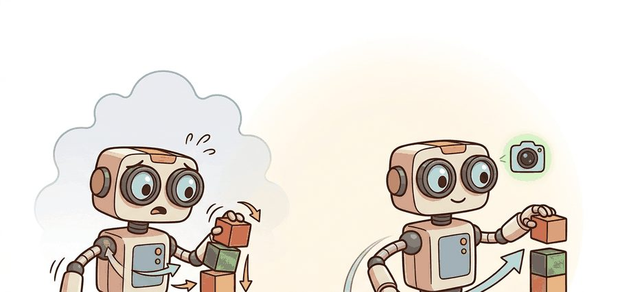
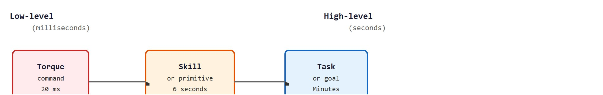
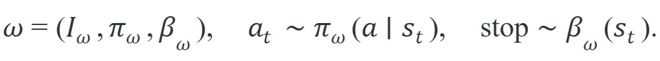
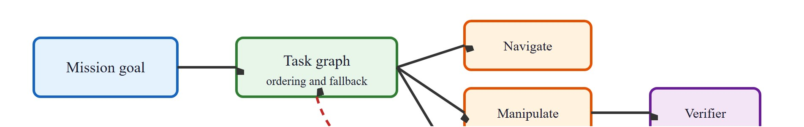

"A skill is a promise to the planner: start here, follow this policy, and I will tell you when I am done."
A Hierarchical Policy Designer

This section assumes familiarity with the perception-action loop introduced in section 1.2. The option tuple defined here is examined in depth in section 26.2, which formalizes initiation sets, termination conditions, and the option-critic learning rule. The skill vocabulary built in this section recurs in section 26.4, where language models act as high-level planners over typed skill libraries, and in section 33.2, where SayCan grounds natural-language instructions by scoring candidate skills against affordance functions.
A robot arm completing a pick-and-place task issues roughly 3,000 joint-torque commands per minute, yet the human who taught it described the job in four words: "pick up the cup." Bridging that gap is the central design problem in embodied AI right now, as systems leave structured factories and enter unscripted homes and hospitals. A skill is the abstraction that makes it possible: a self-contained behavioral unit with a start condition, an internal controller, and a termination rule. You will see how the option framework formalizes this contract, why the boundary between low-level and high-level actions is defined by temporal scale and reusability, and how a typed skill library turns a planner into a reliable sequencer rather than a fragile script.
Ask a robot to "pick up the cup." Beneath that four-word instruction, roughly 3,000 joint-torque commands per minute must fire in the right order. No human planner thinks in torques. The entire discipline of skill hierarchy exists to let the planner reason in cups while the controller reasons in newtons. Hierarchy separates timing, contact, recovery, and sequencing so a high-level planner can select skills without pretending every low-level policy is deterministic.
Two terms will recur constantly from here on: a low-level action is a single motor command issued on a millisecond timescale (a joint torque or a velocity setpoint), while a high-level skill is a longer-running, self-contained behavior (seconds or more) that decides internally which low-level actions to issue and when to stop. The rest of this section defines the boundary between the two precisely.
The distinction is temporal scale. A low-level action might be a velocity command for 20 milliseconds. A high-level skill might be a 6-second door-opening routine that watches force, pose, contact, and success. Both are actions from the planner's perspective, but only the skill hides a controlled sequence behind a stable, reusable behavioral interface that the perception-action loop can drive without re-deriving every motor command. Figure 26.1.C below lays out this progression from torque command to skill to task on a single timescale.

A 20-millisecond torque command and a 6-second door-opening routine are both "actions" in the same way that pressing a single piano key and performing a sonata are both "music": technically accurate, practically useless as a comparison.
For What a skill is; low- vs. high-level actions, treat the skill as an interface: initiation set, internal controller, progress signal, termination rule, verifier, and recovery status must be explicit.
Naming that stable interface is only half the story; to use it as a contract the planner can trust, we need to say precisely why hiding the low level is worth the effort and what fields the contract must contain.
Temporal abstraction matters in embodied AI because physical execution is typically irreversible. A gripper that closes on a fragile object cannot undo a 20-millisecond torque command that exceeded safe contact force. Grouping those commands into a skill with an internal force guard lets the skill catch and reverse failures before the planner ever sees a bad state. Without this boundary, a planner operating at the wrong timescale does one of two bad things. It issues unsafe low-level commands directly, or it sequences hundreds of micro-actions and multiplies error propagation at every step. A concrete illustration of the cost: learning a pick-and-place task from scratch at the torque level typically requires on the order of 50,000 demonstration episodes in published benchmarks, while the same task learned at the skill level, where the planner selects from three typed primitives, typically converges in roughly 300; exact counts vary with object variety and controller quality.
The mechanism is a time-extended policy governed by a termination function. At each timestep, the skill's internal policy selects an action; the termination function independently evaluates whether the skill's postcondition, the sensor-space fact that must hold true for the skill to count as successfully finished (for example, the object is in the gripper), is met or a safety guard is violated. The planner waits, issuing no new commands, until termination fires. This suspends the planner's decision cycle for the duration of the skill, reducing its effective branching factor, the number of distinct choices the planner must consider at each decision point, from thousands of torque-space choices to a handful of skill-level options.
For What a skill is; low- vs. high-level actions, use the option tuple as an audit checklist: initiation states, internal policy, termination probability, and verifier must match the robot task. The equation below states this contract formally: an option $\omega$ is the triple of an initiation set $I_\omega$ (the states where the skill may start), an internal policy $\pi_\omega$ (which action to take), and a termination function $\beta_\omega$ (the probability of stopping in the current state).

So far: physical actions are irreversible enough that skills need internal safety guards, a termination function lets the planner stop watching once a postcondition or guard fires, and the option tuple $(I_\omega,\pi_\omega,\beta_\omega)$ is just the formal name for "where it can start, what it does, when it stops."
Think of a GPS navigator handing you a route to a distant city. While you are driving that route, the navigator does not recalculate turn-by-turn from scratch every second; it waits, monitoring your position, and only interrupts when you deviate or arrive. The skill's termination function plays exactly that role: the high-level planner issues one decision ("execute this skill"), then steps back and waits for a signal that the skill is done or has gone wrong. Just as the navigator reduces your decision load from "which micro-lane adjustment every 50 ms" to "which city next," the skill reduces the planner's branching factor from thousands of torque-space options to a small set of composable behavioral units.
For What a skill is; low- vs. high-level actions, map the option fields onto behavior trees, task graphs, finite-state machines, or task-and-motion planning nodes so start, act, stop, and verify remain inspectable. Figure 26.1.B shows one such mapping, where a mission goal expands into a task graph of skills with a verifier that can route failures back upstream.
In BehaviorTree.CPP, declare every skill's postcondition as a typed output port and every skill's precondition as a typed input port using BT::OutputPort and BT::InputPort in providedPorts(). The blackboard then enforces that the producing skill writes the same key the consuming skill reads, which catches coordinate-frame mismatches (map frame vs. odom frame) at tree-load time rather than at runtime. Without typed ports, two skills can each pass their own unit tests while silently exchanging stale or misframed data at their boundary.

The option tuple and its diagram stay abstract until you watch the four fields turn into running code; the fragment below makes the initiation, termination, and verifier fields concrete in a few lines of Python.
Before wiring a skill to ROS 2, BehaviorTree.CPP, Drake, or a learned policy, the code must expose five fields: initiation, progress, termination, verification, and failure reporting. The fragment below shows all five in one dataclass.
# Define a reusable robot skill with explicit start, stop, and verify logic.
# The example separates planner-facing status from low-level control details.
from dataclasses import dataclass
@dataclass
class SkillResult:
name: str
status: str
reason: str
def grasp_ready(state):
return state["object_visible"] and state["base_distance_m"] < 0.8
def run_grasp_skill(state):
if not grasp_ready(state):
return SkillResult("grasp", "blocked", "precondition failed")
if state["force_n"] >= 8.0 and state["lift_cm"] >= 3.0:
return SkillResult("grasp", "success", "object verified in gripper")
return SkillResult("grasp", "retry", "insufficient lift evidence")
print(run_grasp_skill({"object_visible": True, "base_distance_m": 0.5, "force_n": 9.2, "lift_cm": 4.0}))This expected output means the skill returned a planner-facing verdict, not torque-level behavior. The key field is status='success', which tells the hierarchy that the grasp can hand control back upward because the postcondition was verified in sensor space.
run_grasp_skill dataclass function that checks the initiation predicate (grasp_ready), then returns blocked, success, or retry based on measured force and lift height, so the planner sees only a verdict and never a raw torque stream.Trace the algorithm for a single grasp skill with concrete sensor readings. The skill's initiation predicate is object_visible AND base_distance_m < 0.8; its termination function fires when force_n >= 8.0 (contact achieved) or time >= 6.0 s (timeout); its verifier requires lift_cm >= 3.0.
object_visible=True, base_distance_m=0.5. Predicate evaluates True AND (0.5 < 0.8) = True. The skill is allowed to start.force_n = 1.1 at t=0.8 s, then 3.7 at t=1.6 s, then 8.3 at t=2.4 s. Termination checks each tick: 8.3 >= 8.0 is now True.lift_cm = 4.0 >= 3.0 = True. Postcondition confirmed in sensor space.SkillResult(name='grasp', status='success', reason='object verified in gripper'). Control hands back upward, and the planner selects the next skill.Now flip one number: if the gripper had reached force_n = 8.3 but lift_cm = 0.4 (object slipped), Step 4 fails the verifier and Step 5 returns status='retry' with reason='insufficient lift evidence'. The contact guard alone is not proof of a successful grasp; the verifier is what separates a real skill from a hopeful command sequence.
navigate_to_station, grasp_handle, dock_drone, or change_lane.For What a skill is; low- vs. high-level actions, use BehaviorTree.CPP, ROS 2 lifecycle nodes, Drake systems, or task-and-motion planning to handle scheduling and fallback while preserving explicit skill contracts.
For What a skill is; low- vs. high-level actions, decompose the household command into navigation, inspection, reachability, grasp, carry, and handoff only if each subskill exposes a verifier and recovery route.
Amazon's Sparrow robotic picking system treats each item retrieval as a discrete skill rather than a torque-level trajectory: a vision system selects a grasp pose, an internal controller runs suction or pinch grasping, and a termination check confirms the item left the bin before the planner moves on. The skill boundary is what lets one arm handle millions of distinct SKUs, since the planner never reasons about motor commands, only about whether the "pick" skill succeeded or must retry.
| Field | Question | Example For A Mobile Manipulator |
|---|---|---|
| Initiation | When may it start? | Object detected, arm clear, base within reach. |
| Policy | What controller runs? | Visual servoing plus impedance control. |
| Termination | When does it stop? | Grasp force stable for 0.5 seconds. |
| Verification | How is success proved? | Object pose follows gripper during lift. |
| Recovery | What happens after failure? | Open gripper, re-localize, retry from a safer pose. |
A common assumption is that a skill is simply a named macro: a fixed sequence of low-level commands that gets called as a unit. In embodied AI this is wrong in a critical way. A skill is defined by its initiation predicate, its internal policy, and its termination function, not by the particular motor commands it issues. Two robots executing the same "grasp" skill may use entirely different torque sequences depending on object pose, gripper geometry, and contact feedback, yet both are executing the same skill because they share the same behavioral contract. The correct mental model is that a skill is an interface specification, and the low-level controller is one possible implementation of that interface. Treating skills as fixed command sequences breaks the moment the environment, hardware, or contact conditions change, because there is no termination function to detect when the sequence has gone wrong.
The most common hierarchy failure is not a skill failing on its own but two individually correct skills producing a bad joint state at their boundary. Consider a navigate skill that terminates when the robot is within 0.6 m of a target pose and a grasp skill whose initiation predicate requires base_distance_m < 0.8 m. Both pass their own checks, yet if the navigate skill's termination criterion uses a different coordinate frame than the grasp skill's initiation predicate (for example, one in map frame and one in odom frame after a localization jump), the grasp will block or act on a stale estimate. The fix is to require that every skill's postcondition be expressed in the same sensor-space quantities that the next skill reads as its precondition, checked in a single perception pass before handoff.
Three deployed systems illustrate the spectrum. RT-2 (Brohan et al., 2023) uses a vision-language-action model but still invokes discrete skill primitives (pick, place, open) as its action vocabulary, not raw joint commands. SayCan (Ahn et al., 2022) grounds language instructions by scoring each candidate skill against an affordance function before selecting it, making the initiation predicate explicit at scale. BehaviorTree.CPP, used in production manipulation stacks at Boston Dynamics and in ROS 2 Nav2, encodes the exact option tuple fields (precondition, tick policy, success/failure port) as typed tree nodes. All three separate the planner's choice of skill from the controller that executes it.
If the skill contract is so useful, why can't we reuse the same skill library across every robot? The answer reveals the hardest open problems in the field.
Universal skill interfaces across embodiments (2024-2026). The core challenge is defining a skill vocabulary that transfers across robot morphologies without retraining low-level controllers per platform. pi0 (Black et al., Physical Intelligence, 2024) introduced a flow-matching vision-language-action model (VLA) (flow matching is a training method that learns to transform random noise into a valid action sequence, the same family of technique that powers image-diffusion models) that conditions a diffusion policy on skill-level tokens, showing that a shared high-level interface can drive a fleet of diverse hardware with a single backbone, but termination and verification logic still requires per-embodiment calibration of force thresholds and workspace limits.
Skill discovery from internet-scale video without robot data (2024-2026). Rather than pooling teleoperation datasets, recent work mines human video directly for reusable skill primitives. UniSim (Yang et al., Stanford, 2024) learns a neural world model from web video and uses it to synthesize skill-level rewards, letting agents discover pick, place, and pour as emergent behavioral units without a single robot demonstration. The open challenge is grounding the discovered skill boundaries in the robot's own sensor space, since video-derived termination signals are visual and do not carry force or proprioceptive evidence.
Hierarchical skill planning with large language model task graphs (2024-2026). Scaffold-LLM planners such as RoboDual (Zhi et al., 2025) and Mobility VLA (Huang et al., Google DeepMind, 2024) separate a slow LLM task graph from a fast reactive controller by treating each skill node as a typed API call with precondition and postcondition annotations. Grounding those annotations in live sensor state without a full task-and-motion planning (TAMP) re-solve at every step remains unsolved at the latency needed for real-time manipulation.
Open problem for PhD research. Skill termination functions trained in simulation exhibit systematic bias when deployed on real hardware: the learned beta function fires on visual features that correlate with success in simulation but are absent or misleading on physical objects (specular highlights, deformation, occlusion). A tractable thesis question is: can a lightweight domain-adaptation module, trained on a handful of real rollouts, recalibrate a simulation-derived termination function to physical sensor distributions without re-training the skill policy itself? The answer would unblock large-scale sim-to-real transfer of entire skill libraries. A skill that knows how to act but not when to stop is not a skill; it is a runaway controller.
For What a skill is; low- vs. high-level actions, the test is whether initiation set, internal policy, termination rule, verifier, and recovery route can be written for the target robot skill.
What a skill is; low- vs. high-level actions is useful when it makes the perception-action loop more reliable, not when it merely adds a more impressive model name.
Design a method-matched experiment for What a skill is; low- vs. high-level actions. Specify the environment, observation schema, action interface, metric, and one perturbation that targets the section's core assumption.
Beginner (weekend): Build a two-level skill hierarchy in Gymnasium that wraps a continuous-control environment (such as FetchReach-v3) so a high-level agent selects from three named skills (reach, hold, release) and each skill runs its own termination predicate. The key challenge is writing a termination function that fires on a sensor-space postcondition rather than after a fixed number of steps, so the high-level agent never has to reason about joint angles directly.
Intermediate (1-2 weeks): Implement a verified skill sequencer in MuJoCo (via the official mujoco Python bindings or the dm_control suite; note that mujoco-py was deprecated in 2022) for a pick-and-place task, where each skill exposes an initiation predicate and a postcondition verifier, and the sequencer detects boundary mismatches (for example, a misaligned coordinate frame between a navigate skill and a grasp skill) before handoff rather than at runtime. The key challenge is expressing both skills' pre- and postconditions in the same sensor-space frame so the sequencer can assert consistency at the skill boundary without access to ground-truth simulator state.
Intermediate (1-2 weeks): Use LeRobot and a ROS2 lifecycle node wrapper to turn three behavior-cloned manipulation primitives (approach, grasp, retract) into typed skill nodes whose input and output ports are validated at tree-load time with BehaviorTree.CPP; measure how often boundary-mismatch failures are caught at load time versus at runtime compared to a flat policy baseline. The key challenge is translating the learned policy's observation schema into typed port definitions that the behavior tree can verify statically without running inference.
Goal: See empirically how wrapping low-level actions inside skills shrinks the high-level decision problem, and why a termination function (not a fixed step count) is what makes the skill reusable.
Tools needed: Python 3, gymnasium with the MuJoCo extras (pip install "gymnasium[mujoco]"), and NumPy. Use the FetchReach-v3 environment, which has a continuous 4-D action space.
Procedure (about 20-30 minutes): (1) Run a flat random agent that samples raw 4-D actions and log how many environment steps it takes to bring the gripper within 5 cm of the goal across 100 episodes. (2) Now wrap the same environment with three named skills: reach_toward(goal) (a proportional controller on end-effector error), hold() (zero velocity), and release(). Give each skill a termination predicate that fires on a sensor-space postcondition (for example, reach_toward stops when end-effector error < 5 cm or after a 50-step safety timeout). Let a high-level agent choose only among these three skills.
What to vary: the termination threshold (try 2 cm, 5 cm, 10 cm) and whether termination uses the sensor-space predicate versus a fixed 50-step budget.
What to observe: the number of high-level decisions per episode (it should drop from hundreds of raw-action choices to a handful of skill selections), and how the fixed-step variant fails to generalize when the goal distance changes, while the predicate-driven variant adapts automatically. This is the branching-factor collapse from the Formal Contract section, measured rather than asserted.
This section established the skill as a formal behavioral unit: an initiation predicate, an internal controller, a termination rule, and a verifier that reports success or recovery status back to the planner. The next reading step is Section 26.2: The options framework, which formalizes this contract mathematically by specifying initiation sets, option policies, and termination functions, and introduces the option-critic learning rule that allows both the skill controller and its termination condition to be trained end to end.
Eysenbach, B. et al. (2018). Diversity is All You Need: Learning Skills Without a Reward Function.
DIAYN studies unsupervised skill discovery by maximizing distinguishable behaviors. It is useful for understanding when skills can be learned before a downstream task is specified.
Bacon, P. L., Harb, J., and Precup, D. (2017). The Option-Critic Architecture.
Option-Critic learns options end to end within reinforcement learning. It helps readers compare hand-specified skills with learned temporal abstractions.
This paper formalizes options as temporally extended actions with initiation, policy, and termination conditions. It is the canonical reference for the chapter's skill hierarchy vocabulary.
Open X-Embodiment and RT-X Project Website.
Cross-embodiment datasets make skill reuse a practical question rather than only a theory topic. The project helps readers connect hierarchy to robot foundation models and shared behavior repertoires.
BehaviorTree.CPP Documentation.
Behavior trees are a production-friendly way to compose skills with fallback and monitoring logic. They complement learned policies by making high-level task decomposition explicit and inspectable.